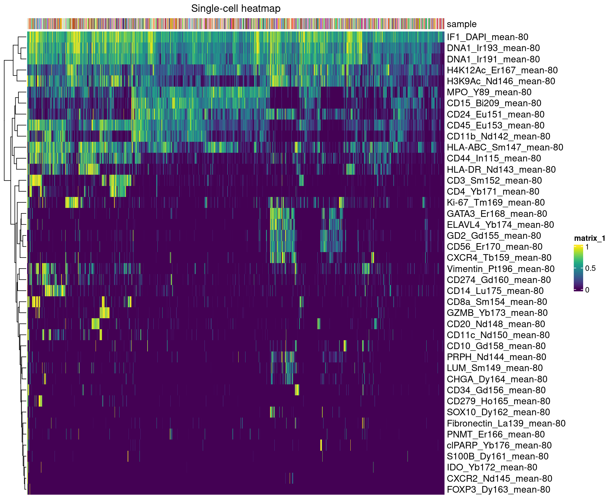

Quality control - Part 1
LazDaria
2024-03-27
Last updated: 2024-03-27
Checks: 7 0
Knit directory: MapMetSC/
This reproducible R Markdown analysis was created with workflowr (version 1.7.1). The Checks tab describes the reproducibility checks that were applied when the results were created. The Past versions tab lists the development history.
Great! Since the R Markdown file has been committed to the Git repository, you know the exact version of the code that produced these results.
Great job! The global environment was empty. Objects defined in the global environment can affect the analysis in your R Markdown file in unknown ways. For reproduciblity it’s best to always run the code in an empty environment.
The command set.seed(20240314) was run prior to running
the code in the R Markdown file. Setting a seed ensures that any results
that rely on randomness, e.g. subsampling or permutations, are
reproducible.
Great job! Recording the operating system, R version, and package versions is critical for reproducibility.
Nice! There were no cached chunks for this analysis, so you can be confident that you successfully produced the results during this run.
Great job! Using relative paths to the files within your workflowr project makes it easier to run your code on other machines.
Great! You are using Git for version control. Tracking code development and connecting the code version to the results is critical for reproducibility.
The results in this page were generated with repository version b1b42eb. See the Past versions tab to see a history of the changes made to the R Markdown and HTML files.
Note that you need to be careful to ensure that all relevant files for
the analysis have been committed to Git prior to generating the results
(you can use wflow_publish or
wflow_git_commit). workflowr only checks the R Markdown
file, but you know if there are other scripts or data files that it
depends on. Below is the status of the Git repository when the results
were generated:
Ignored files:
Ignored: analysis/figure/
Note that any generated files, e.g. HTML, png, CSS, etc., are not included in this status report because it is ok for generated content to have uncommitted changes.
These are the previous versions of the repository in which changes were
made to the R Markdown (analysis/02_QC_1.Rmd) and HTML
(docs/02_QC_1.html) files. If you’ve configured a remote
Git repository (see ?wflow_git_remote), click on the
hyperlinks in the table below to view the files as they were in that
past version.
| File | Version | Author | Date | Message |
|---|---|---|---|---|
| Rmd | b1b42eb | LazDaria | 2024-03-27 | 02_QC_1.Rmd |
| Rmd | 89a6198 | LazDaria | 2024-03-27 | 03_QC_2.Rmd |
| html | 89a6198 | LazDaria | 2024-03-27 | 03_QC_2.Rmd |
| Rmd | 1d25af4 | LazDaria | 2024-03-25 | worfklowR part1 |
| html | 1d25af4 | LazDaria | 2024-03-25 | worfklowR part1 |
Quality control - Exclusion of lost cells
Segmentation in MapMetIP is performed based on high-resolution IF images. However, due to the washing step between IF microscopy and IMC staining, some cells might be lost. These have to be excluded before downstream analysis.
Load libraries
Load libraries
library(ggplot2)
library(bruceR)
bruceR (v2023.9)
Broadly Useful Convenient and Efficient R functions
Packages also loaded:
✔ data.table ✔ emmeans
✔ dplyr ✔ lmerTest
✔ tidyr ✔ effectsize
✔ stringr ✔ performance
✔ ggplot2 ✔ interactions
Main functions of `bruceR`:
cc() Describe() TTEST()
add() Freq() MANOVA()
.mean() Corr() EMMEANS()
set.wd() Alpha() PROCESS()
import() EFA() model_summary()
print_table() CFA() lavaan_summary()
For full functionality, please install all dependencies:
install.packages("bruceR", dep=TRUE)
Online documentation:
https://psychbruce.github.io/bruceR
To use this package in publications, please cite:
Bao, H.-W.-S. (2023). bruceR: Broadly useful convenient and efficient R functions (Version 2023.9) [Computer software]. https://CRAN.R-project.org/package=bruceRlibrary(ComplexHeatmap)Loading required package: grid========================================
ComplexHeatmap version 2.12.1
Bioconductor page: http://bioconductor.org/packages/ComplexHeatmap/
Github page: https://github.com/jokergoo/ComplexHeatmap
Documentation: http://jokergoo.github.io/ComplexHeatmap-reference
If you use it in published research, please cite either one:
- Gu, Z. Complex heatmaps reveal patterns and correlations in multidimensional
genomic data. Bioinformatics 2016.
- Gu, Z. Complex Heatmap Visualization. iMeta 2022.
The new InteractiveComplexHeatmap package can directly export static
complex heatmaps into an interactive Shiny app with zero effort. Have a try!
This message can be suppressed by:
suppressPackageStartupMessages(library(ComplexHeatmap))
========================================library(viridis)Loading required package: viridisLitelibrary(circlize)========================================
circlize version 0.4.15
CRAN page: https://cran.r-project.org/package=circlize
Github page: https://github.com/jokergoo/circlize
Documentation: https://jokergoo.github.io/circlize_book/book/
If you use it in published research, please cite:
Gu, Z. circlize implements and enhances circular visualization
in R. Bioinformatics 2014.
This message can be suppressed by:
suppressPackageStartupMessages(library(circlize))
========================================library(RColorBrewer)
library(paletteer)
library(Rphenoannoy)Loading required package: igraph
Attaching package: 'igraph'The following object is masked from 'package:circlize':
degreeThe following object is masked from 'package:tidyr':
crossingThe following objects are masked from 'package:dplyr':
as_data_frame, groups, unionThe following objects are masked from 'package:stats':
decompose, spectrumThe following object is masked from 'package:base':
unionlibrary(scuttle)Loading required package: SingleCellExperimentLoading required package: SummarizedExperimentLoading required package: MatrixGenericsLoading required package: matrixStats
Attaching package: 'matrixStats'The following object is masked from 'package:dplyr':
count
Attaching package: 'MatrixGenerics'The following objects are masked from 'package:matrixStats':
colAlls, colAnyNAs, colAnys, colAvgsPerRowSet, colCollapse,
colCounts, colCummaxs, colCummins, colCumprods, colCumsums,
colDiffs, colIQRDiffs, colIQRs, colLogSumExps, colMadDiffs,
colMads, colMaxs, colMeans2, colMedians, colMins, colOrderStats,
colProds, colQuantiles, colRanges, colRanks, colSdDiffs, colSds,
colSums2, colTabulates, colVarDiffs, colVars, colWeightedMads,
colWeightedMeans, colWeightedMedians, colWeightedSds,
colWeightedVars, rowAlls, rowAnyNAs, rowAnys, rowAvgsPerColSet,
rowCollapse, rowCounts, rowCummaxs, rowCummins, rowCumprods,
rowCumsums, rowDiffs, rowIQRDiffs, rowIQRs, rowLogSumExps,
rowMadDiffs, rowMads, rowMaxs, rowMeans2, rowMedians, rowMins,
rowOrderStats, rowProds, rowQuantiles, rowRanges, rowRanks,
rowSdDiffs, rowSds, rowSums2, rowTabulates, rowVarDiffs, rowVars,
rowWeightedMads, rowWeightedMeans, rowWeightedMedians,
rowWeightedSds, rowWeightedVarsLoading required package: GenomicRangesLoading required package: stats4Loading required package: BiocGenerics
Attaching package: 'BiocGenerics'The following objects are masked from 'package:igraph':
normalize, path, unionThe following objects are masked from 'package:dplyr':
combine, intersect, setdiff, unionThe following objects are masked from 'package:stats':
IQR, mad, sd, var, xtabsThe following objects are masked from 'package:base':
anyDuplicated, append, as.data.frame, basename, cbind, colnames,
dirname, do.call, duplicated, eval, evalq, Filter, Find, get, grep,
grepl, intersect, is.unsorted, lapply, Map, mapply, match, mget,
order, paste, pmax, pmax.int, pmin, pmin.int, Position, rank,
rbind, Reduce, rownames, sapply, setdiff, sort, table, tapply,
union, unique, unsplit, which.max, which.minLoading required package: S4Vectors
Attaching package: 'S4Vectors'The following objects are masked from 'package:Matrix':
expand, unnameThe following objects are masked from 'package:data.table':
first, secondThe following object is masked from 'package:tidyr':
expandThe following objects are masked from 'package:dplyr':
first, renameThe following objects are masked from 'package:base':
expand.grid, I, unnameLoading required package: IRanges
Attaching package: 'IRanges'The following object is masked from 'package:data.table':
shiftThe following objects are masked from 'package:dplyr':
collapse, desc, sliceLoading required package: GenomeInfoDbLoading required package: BiobaseWelcome to Bioconductor
Vignettes contain introductory material; view with
'browseVignettes()'. To cite Bioconductor, see
'citation("Biobase")', and for packages 'citation("pkgname")'.
Attaching package: 'Biobase'The following object is masked from 'package:MatrixGenerics':
rowMediansThe following objects are masked from 'package:matrixStats':
anyMissing, rowMedianslibrary(cytomapper)Loading required package: EBImage
Attaching package: 'EBImage'The following object is masked from 'package:SummarizedExperiment':
resizeThe following object is masked from 'package:Biobase':
channelThe following objects are masked from 'package:GenomicRanges':
resize, tileThe following objects are masked from 'package:IRanges':
resize, tileThe following object is masked from 'package:performance':
displayThe following object is masked from 'package:effectsize':
displayThe following object is masked from 'package:data.table':
transpose
Attaching package: 'cytomapper'The following objects are masked from 'package:Biobase':
channelNames, channelNames<-library(cowplot)
library(gridGraphics)Read SPE object
We will first read the spatial experiment object (SPE) generated in
the read data section. Please make sure,
path points to the folder where you stored the SPE
object.
path <- params$output
spe <- readRDS(file.path(path,"spe.rds"))Exclude lost cells
Quality control step 1
In a first step, we exclude cells, that have a mean intensity of zero
for all IMC channels. For that, we will use the intensities measured
based on the non-dilated masks (stored in counts) to avoid
capturing signals from neighboring cells. To correctly identify lost
cells in the clustering step below, we use the mean of the 20% highest
pixel intensities as a measure for marker intensity here, as this
feature is less dependent on cell size.
# Use measurements based on non-dilated mask stored in counts
intensity_mat <- assay(spe, "counts")
colnames(intensity_mat) <- spe$sample_id
#use mean-80 intensity to avoid losing big cells
intensity_mat_mean_80 <- intensity_mat[grepl("mean-80", rownames(intensity_mat)),]
#exclusion of all-zero cells
intensity_mat_imc <- intensity_mat_mean_80[!grepl("IF2_GD2|IF3_CD45/56|DAPI", rownames(intensity_mat_mean_80)),]
non_zeros <- as.logical(colSums(intensity_mat_imc)!=0)
spe <- spe[, non_zeros]
mat <- intensity_mat_mean_80[, non_zeros]We excluded 6121 cells in this first quality control step.
For the next quality control step, we will only consider IMC and nuclear IF channels.
mat <- mat[!grepl("IF2_GD2|IF3_CD45/56", rownames(mat)),]Quality control step 2
Although, we excluded all cells with zero mean intensities in all IMC channels, there might still be some cells, which actually swam off between IF and IMC and have IMC counts due to background noise or lateral spillover. In the heatmap below, we can clearly observe a cluster of cells expressing the IF marker DAPI, but no IMC markers.
#named color vectors
qual_col_pals <- brewer.pal.info[brewer.pal.info$category == 'qual',]
col_vector_433 <- colors()[grep('gr(a|e)y', grDevices::colors(), invert = T)]
sample_names <- sub("_[^_]+$", "", colnames(mat))
col_sample <- setNames(sample(col_vector_433, length(unique(sample_names))), unique(sample_names))
set.seed(221228)
rand_cells <- sample(seq_len(ncol(mat)), 2000)
column_ha <- HeatmapAnnotation(sample = sample_names[rand_cells],
col=list(sample=col_sample),
show_legend=F)
Heatmap(mat[,rand_cells],
column_title = "Single-cell heatmap",
top_annotation = column_ha,
show_column_dend = F,
show_column_names=F,
col=viridis(100)
)
We will cluster the data to identify cells that swam off.
set.seed(230619)
mat <- t(mat)
Rphenograph_out <- Rphenoannoy(mat, k = 45)Run Rphenograph starts:
-Input data of 2033550 rows and 42 columns
-k is set to 45 Finding nearest neighbors...DONE ~ 881.98 s
Compute jaccard coefficient between nearest-neighbor sets...Presorting knn...presorting DONE ~ 151.725 s
Start jaccard
DONE ~ 8.247 s
Build undirected graph from the weighted links...DONE ~ 67.224 s
Run louvain clustering on the graph ...DONE ~ 2115.043 sRun Rphenograph DONE, totally takes 3072.494s. Return a community class
-Modularity value: 0.8756466
-Number of clusters: 46clusters <- factor(membership(Rphenograph_out[[2]]))
spe$pg_clusters_lostcells <- clustersNext, we will have a look at the mean marker expression per cluster in a heatmap.
mean <- aggregate(mat, list(clusters), mean)
mean_t <- t(mean)
mean_t <- t(mean[,2:ncol(mean)])
colnames(mean_t) <- mean[,"Group.1"]
n <- length(unique(clusters))
col_clusters <- setNames(sample(col_vector_433, n), unique(clusters))
column_ha = HeatmapAnnotation(cluster = mean[,"Group.1"],
ncells=anno_barplot(as.data.frame(table(clusters))[,"Freq"], height = unit(3, "cm")),
col=list(cluster=col_clusters),
show_legend=T)
Heatmap(mean_t,
column_title = "Cluster-means heatmap",
top_annotation = column_ha,
cluster_columns=T,
show_column_dend = F,
show_column_names=T,
show_row_names=T,
col=viridis(100)
)
We can see that cluster 11 represent cells that swam off (DAPI expression without IMC marker expression). To be sure that we only exclude cells that are really not present on the IMC channels, we will identify the samples with the highest number of cells from clsuter 11.
c <- "11"
mat <- t(mat)
data <- data.frame(sample=colnames(mat), clusters)
data$freq <- 1
data_wide <- data %>% pivot_wider(names_from = c("clusters"), values_from = "freq", values_fn = sum, values_fill = 0)
data_long <- data_wide %>% pivot_longer(cols = !sample, names_to = "cluster", values_to = "count")
clust <- data_long[data_long$cluster==c,]
cells_per_sample <- table(spe$sample_id)[clust$sample]
lost_cells_perc <- clust$count/cells_per_sample
clust$percentage <- lost_cells_perc
clust <- clust[order(clust$percentage, decreasing=T), ]
max_sample <- clust$sample[1]
write.csv(clust, file.path(params$output,"lost_cells.csv"))Sample 20220607_20220201_15-042_BM_003 has the highest number of cells from cluster 11. For a last sanity check, we will color the lost cells in the segmentation mask of that sample and save the colored mask for a more thorough check in napari.
masks <- loadImages(file.path(params$input, "masks", paste0(max_sample, ".tif")), as.is = TRUE)
img <- loadImages(file.path(params$input, "img", paste0(max_sample, ".tif")))
mcols(masks) <- DataFrame(sample_id = names(masks))
mcols(img) <- DataFrame(sample_id = names(img))
channelNames(img) <- rownames(spe)[1:44]
c = 11
tmp <- spe[,spe$sample_id == max_sample]
tmp$lost_cell <- "no"
tmp[,tmp$pg_clusters_lostcells==c]$lost_cell <- "yes"
dapi_plot <- plotPixels(img,
colour_by = "IF1_DAPI_mean",
bcg = list(IF1_DAPI_mean = c(0, 1, 1)),
legend=NULL,
return_plot = TRUE)iridium_plot <- plotPixels(img,
colour_by = "DNA1_Ir193_mean",
bcg = list(DNA1_Ir193_mean = c(0, 1, 1)),
legend=NULL,
return_plot = TRUE)mask_plot <- plotCells(masks,
object = tmp,
cell_id = "ObjectNumber",
img_id = "sample_id",
colour_by = "lost_cell",
colour = list(lost_cell = c("no" = "gray", "yes" = "red")),
missing_colour = "white",
legend=NULL,
return_plot = TRUE)p1 <- ggdraw(dapi_plot$plot, clip = "on")
p2 <- ggdraw(iridium_plot$plot, clip = "on")
p3 <- ggdraw(mask_plot$plot, clip = "on")
plot_grid(p1, p2, p3)
By comparing the DAPI image, the Iridium image and the binary mask (highlighting cells from cluster 11 in blue), we see that cluster 11 definitely represents the cluster of lost cells. We excluded 30285 cells in total or 46.6640986 cells per image (n=649).
Save object
Finally, we exclude the lost cells from the SPE object and save the latter.
spe <- spe[, spe$pg_clusters_lostcells!=11]
saveRDS(spe, file.path(params$output, "spe_qc1.rds"))Session Info
SessionInfo
R version 4.2.0 (2022-04-22)
Platform: x86_64-pc-linux-gnu (64-bit)
Running under: Ubuntu 20.04.4 LTS
Matrix products: default
BLAS: /usr/lib/x86_64-linux-gnu/openblas-pthread/libblas.so.3
LAPACK: /usr/lib/x86_64-linux-gnu/openblas-pthread/liblapack.so.3
locale:
[1] LC_CTYPE=en_US.UTF-8 LC_NUMERIC=C
[3] LC_TIME=en_US.UTF-8 LC_COLLATE=en_US.UTF-8
[5] LC_MONETARY=en_US.UTF-8 LC_MESSAGES=en_US.UTF-8
[7] LC_PAPER=en_US.UTF-8 LC_NAME=C
[9] LC_ADDRESS=C LC_TELEPHONE=C
[11] LC_MEASUREMENT=en_US.UTF-8 LC_IDENTIFICATION=C
attached base packages:
[1] stats4 grid stats graphics grDevices utils datasets
[8] methods base
other attached packages:
[1] gridGraphics_0.5-1 cowplot_1.1.2
[3] cytomapper_1.9.1 EBImage_4.38.0
[5] scuttle_1.6.3 SingleCellExperiment_1.20.1
[7] SummarizedExperiment_1.26.1 Biobase_2.56.0
[9] GenomicRanges_1.48.0 GenomeInfoDb_1.32.4
[11] IRanges_2.30.1 S4Vectors_0.34.0
[13] BiocGenerics_0.42.0 MatrixGenerics_1.8.1
[15] matrixStats_1.1.0 Rphenoannoy_0.1.0
[17] igraph_1.6.0 paletteer_1.5.0
[19] RColorBrewer_1.1-3 circlize_0.4.15
[21] viridis_0.6.4 viridisLite_0.4.2
[23] ComplexHeatmap_2.12.1 interactions_1.1.5
[25] lmerTest_3.1-3 lme4_1.1-35.1
[27] Matrix_1.6-5 performance_0.10.8
[29] effectsize_0.8.6 emmeans_1.9.0
[31] data.table_1.14.10 stringr_1.5.1
[33] tidyr_1.3.0 dplyr_1.1.4
[35] bruceR_2023.9 ggplot2_3.4.4
[37] workflowr_1.7.1
loaded via a namespace (and not attached):
[1] utf8_1.2.4 shinydashboard_0.7.2
[3] R.utils_2.12.3 tidyselect_1.2.0
[5] htmlwidgets_1.6.4 BiocParallel_1.30.4
[7] DropletUtils_1.16.0 jtools_2.2.2
[9] munsell_0.5.0 codetools_0.2-18
[11] withr_3.0.0 colorspace_2.1-0
[13] highr_0.10 knitr_1.45
[15] rstudioapi_0.15.0 git2r_0.33.0
[17] GenomeInfoDbData_1.2.8 datawizard_0.9.1
[19] rhdf5_2.40.0 rprojroot_2.0.4
[21] coda_0.19-4 vctrs_0.6.5
[23] generics_0.1.3 TH.data_1.1-2
[25] xfun_0.41 R6_2.5.1
[27] doParallel_1.0.17 ggbeeswarm_0.7.2
[29] clue_0.3-65 locfit_1.5-9.8
[31] bitops_1.0-7 rhdf5filters_1.8.0
[33] cachem_1.0.8 DelayedArray_0.22.0
[35] promises_1.2.1 scales_1.3.0
[37] multcomp_1.4-25 beeswarm_0.4.0
[39] gtable_0.3.4 beachmat_2.12.0
[41] Cairo_1.6-2 processx_3.8.3
[43] sandwich_3.1-0 rlang_1.1.3
[45] systemfonts_1.0.5 GlobalOptions_0.1.2
[47] splines_4.2.0 yaml_2.3.8
[49] abind_1.4-5 httpuv_1.6.13
[51] tools_4.2.0 SpatialExperiment_1.6.1
[53] ellipsis_0.3.2 raster_3.6-26
[55] jquerylib_0.1.4 Rcpp_1.0.12
[57] sparseMatrixStats_1.8.0 zlibbioc_1.42.0
[59] purrr_1.0.2 RCurl_1.98-1.14
[61] ps_1.7.6 GetoptLong_1.0.5
[63] zoo_1.8-12 cluster_2.1.3
[65] fs_1.6.3 magrittr_2.0.3
[67] magick_2.8.2 RANN_2.6.1
[69] mvtnorm_1.2-4 whisker_0.4.1
[71] mime_0.12 evaluate_0.23
[73] fftwtools_0.9-11 xtable_1.8-4
[75] jpeg_0.1-10 gridExtra_2.3
[77] shape_1.4.6 compiler_4.2.0
[79] tibble_3.2.1 crayon_1.5.2
[81] minqa_1.2.6 R.oo_1.25.0
[83] htmltools_0.5.7 later_1.3.2
[85] tiff_0.1-12 DBI_1.2.1
[87] MASS_7.3-56 boot_1.3-28
[89] cli_3.6.2 R.methodsS3_1.8.2
[91] parallel_4.2.0 insight_0.19.7
[93] pkgconfig_2.0.3 getPass_0.2-4
[95] numDeriv_2016.8-1.1 sp_2.1-2
[97] terra_1.7-65 foreach_1.5.2
[99] svglite_2.1.3 vipor_0.4.7
[101] bslib_0.6.1 dqrng_0.3.2
[103] XVector_0.36.0 estimability_1.4.1
[105] callr_3.7.3 digest_0.6.34
[107] parameters_0.21.3 rmarkdown_2.25
[109] edgeR_3.38.4 DelayedMatrixStats_1.18.2
[111] shiny_1.8.0 rjson_0.2.21
[113] nloptr_2.0.3 lifecycle_1.0.4
[115] nlme_3.1-157 jsonlite_1.8.8
[117] Rhdf5lib_1.18.2 limma_3.52.4
[119] fansi_1.0.6 pillar_1.9.0
[121] lattice_0.20-45 fastmap_1.1.1
[123] httr_1.4.7 survival_3.3-1
[125] glue_1.7.0 bayestestR_0.13.1
[127] png_0.1-8 iterators_1.0.14
[129] svgPanZoom_0.3.4 pander_0.6.5
[131] stringi_1.8.3 sass_0.4.8
[133] HDF5Array_1.24.2 nnls_1.5
[135] rematch2_2.1.2
sessionInfo()R version 4.2.0 (2022-04-22)
Platform: x86_64-pc-linux-gnu (64-bit)
Running under: Ubuntu 20.04.4 LTS
Matrix products: default
BLAS: /usr/lib/x86_64-linux-gnu/openblas-pthread/libblas.so.3
LAPACK: /usr/lib/x86_64-linux-gnu/openblas-pthread/liblapack.so.3
locale:
[1] LC_CTYPE=en_US.UTF-8 LC_NUMERIC=C
[3] LC_TIME=en_US.UTF-8 LC_COLLATE=en_US.UTF-8
[5] LC_MONETARY=en_US.UTF-8 LC_MESSAGES=en_US.UTF-8
[7] LC_PAPER=en_US.UTF-8 LC_NAME=C
[9] LC_ADDRESS=C LC_TELEPHONE=C
[11] LC_MEASUREMENT=en_US.UTF-8 LC_IDENTIFICATION=C
attached base packages:
[1] stats4 grid stats graphics grDevices utils datasets
[8] methods base
other attached packages:
[1] gridGraphics_0.5-1 cowplot_1.1.2
[3] cytomapper_1.9.1 EBImage_4.38.0
[5] scuttle_1.6.3 SingleCellExperiment_1.20.1
[7] SummarizedExperiment_1.26.1 Biobase_2.56.0
[9] GenomicRanges_1.48.0 GenomeInfoDb_1.32.4
[11] IRanges_2.30.1 S4Vectors_0.34.0
[13] BiocGenerics_0.42.0 MatrixGenerics_1.8.1
[15] matrixStats_1.1.0 Rphenoannoy_0.1.0
[17] igraph_1.6.0 paletteer_1.5.0
[19] RColorBrewer_1.1-3 circlize_0.4.15
[21] viridis_0.6.4 viridisLite_0.4.2
[23] ComplexHeatmap_2.12.1 interactions_1.1.5
[25] lmerTest_3.1-3 lme4_1.1-35.1
[27] Matrix_1.6-5 performance_0.10.8
[29] effectsize_0.8.6 emmeans_1.9.0
[31] data.table_1.14.10 stringr_1.5.1
[33] tidyr_1.3.0 dplyr_1.1.4
[35] bruceR_2023.9 ggplot2_3.4.4
[37] workflowr_1.7.1
loaded via a namespace (and not attached):
[1] utf8_1.2.4 shinydashboard_0.7.2
[3] R.utils_2.12.3 tidyselect_1.2.0
[5] htmlwidgets_1.6.4 BiocParallel_1.30.4
[7] DropletUtils_1.16.0 jtools_2.2.2
[9] munsell_0.5.0 codetools_0.2-18
[11] withr_3.0.0 colorspace_2.1-0
[13] highr_0.10 knitr_1.45
[15] rstudioapi_0.15.0 git2r_0.33.0
[17] GenomeInfoDbData_1.2.8 datawizard_0.9.1
[19] rhdf5_2.40.0 rprojroot_2.0.4
[21] coda_0.19-4 vctrs_0.6.5
[23] generics_0.1.3 TH.data_1.1-2
[25] xfun_0.41 R6_2.5.1
[27] doParallel_1.0.17 ggbeeswarm_0.7.2
[29] clue_0.3-65 locfit_1.5-9.8
[31] bitops_1.0-7 rhdf5filters_1.8.0
[33] cachem_1.0.8 DelayedArray_0.22.0
[35] promises_1.2.1 scales_1.3.0
[37] multcomp_1.4-25 beeswarm_0.4.0
[39] gtable_0.3.4 beachmat_2.12.0
[41] Cairo_1.6-2 processx_3.8.3
[43] sandwich_3.1-0 rlang_1.1.3
[45] systemfonts_1.0.5 GlobalOptions_0.1.2
[47] splines_4.2.0 yaml_2.3.8
[49] abind_1.4-5 httpuv_1.6.13
[51] tools_4.2.0 SpatialExperiment_1.6.1
[53] ellipsis_0.3.2 raster_3.6-26
[55] jquerylib_0.1.4 Rcpp_1.0.12
[57] sparseMatrixStats_1.8.0 zlibbioc_1.42.0
[59] purrr_1.0.2 RCurl_1.98-1.14
[61] ps_1.7.6 GetoptLong_1.0.5
[63] zoo_1.8-12 cluster_2.1.3
[65] fs_1.6.3 magrittr_2.0.3
[67] magick_2.8.2 RANN_2.6.1
[69] mvtnorm_1.2-4 whisker_0.4.1
[71] mime_0.12 evaluate_0.23
[73] fftwtools_0.9-11 xtable_1.8-4
[75] jpeg_0.1-10 gridExtra_2.3
[77] shape_1.4.6 compiler_4.2.0
[79] tibble_3.2.1 crayon_1.5.2
[81] minqa_1.2.6 R.oo_1.25.0
[83] htmltools_0.5.7 later_1.3.2
[85] tiff_0.1-12 DBI_1.2.1
[87] MASS_7.3-56 boot_1.3-28
[89] cli_3.6.2 R.methodsS3_1.8.2
[91] parallel_4.2.0 insight_0.19.7
[93] pkgconfig_2.0.3 getPass_0.2-4
[95] numDeriv_2016.8-1.1 sp_2.1-2
[97] terra_1.7-65 foreach_1.5.2
[99] svglite_2.1.3 vipor_0.4.7
[101] bslib_0.6.1 dqrng_0.3.2
[103] XVector_0.36.0 estimability_1.4.1
[105] callr_3.7.3 digest_0.6.34
[107] parameters_0.21.3 rmarkdown_2.25
[109] edgeR_3.38.4 DelayedMatrixStats_1.18.2
[111] shiny_1.8.0 rjson_0.2.21
[113] nloptr_2.0.3 lifecycle_1.0.4
[115] nlme_3.1-157 jsonlite_1.8.8
[117] Rhdf5lib_1.18.2 limma_3.52.4
[119] fansi_1.0.6 pillar_1.9.0
[121] lattice_0.20-45 fastmap_1.1.1
[123] httr_1.4.7 survival_3.3-1
[125] glue_1.7.0 bayestestR_0.13.1
[127] png_0.1-8 iterators_1.0.14
[129] svgPanZoom_0.3.4 pander_0.6.5
[131] stringi_1.8.3 sass_0.4.8
[133] HDF5Array_1.24.2 nnls_1.5
[135] rematch2_2.1.2